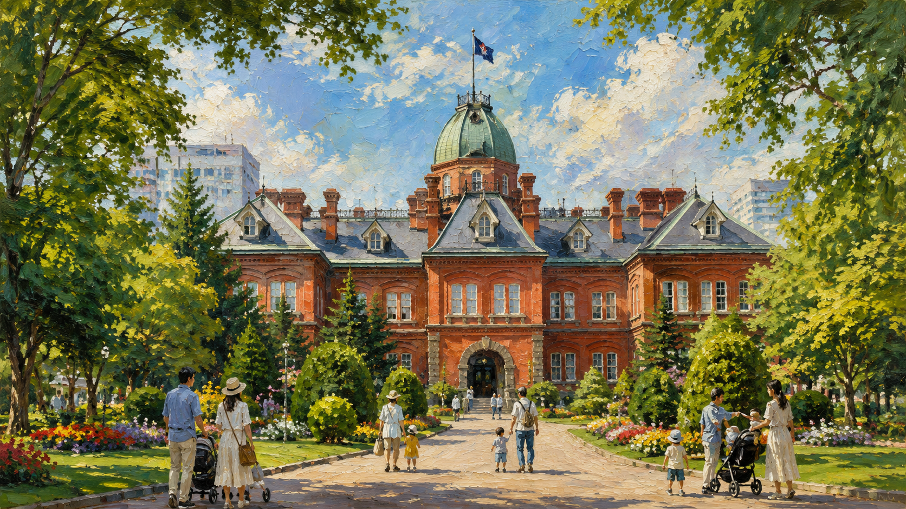
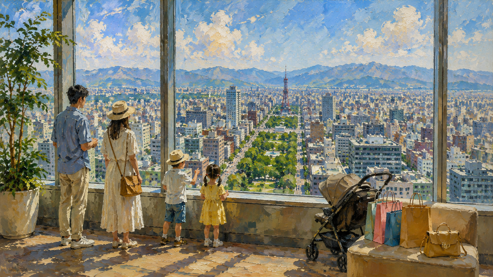
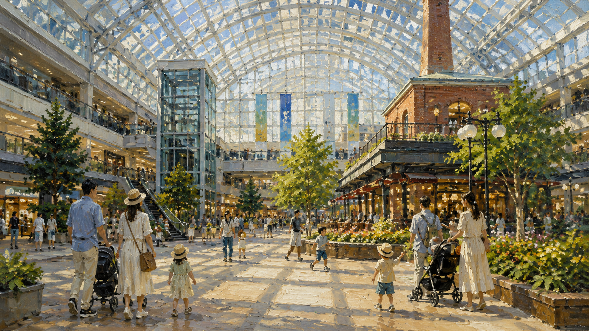
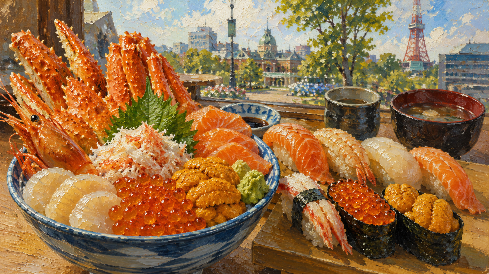
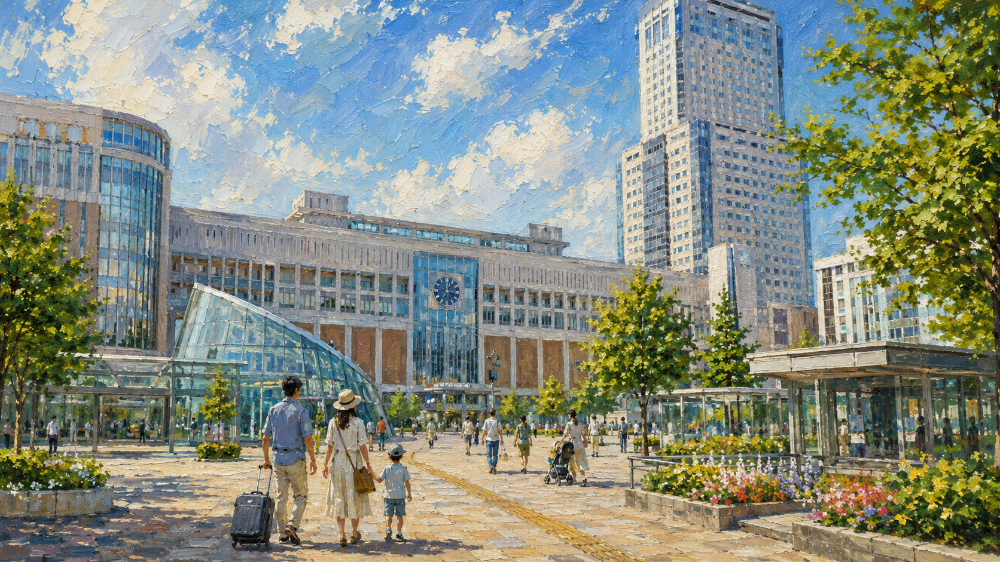
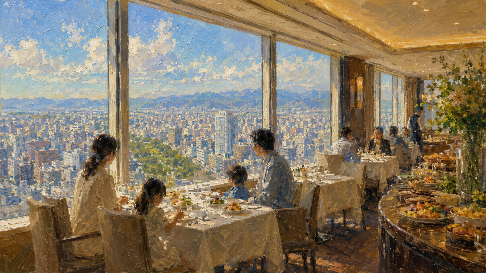
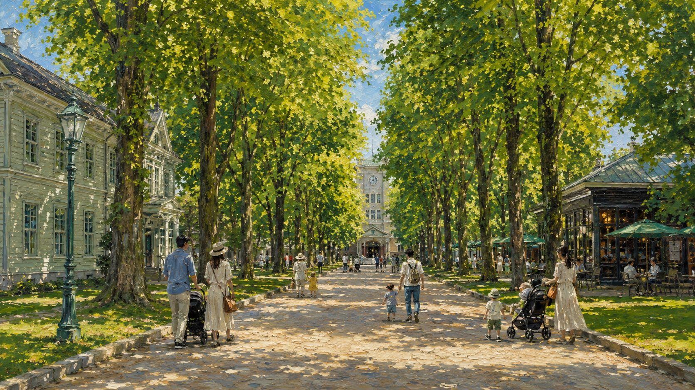
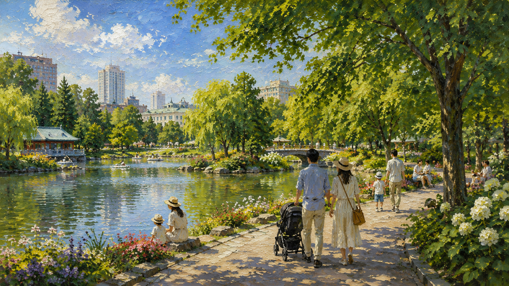
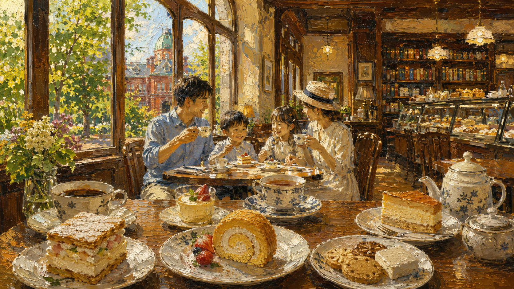
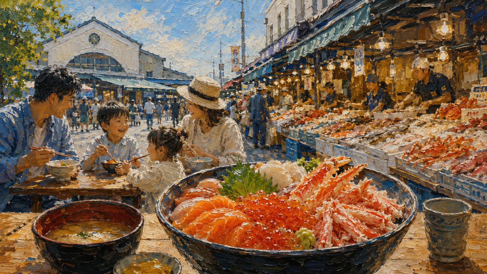

Family Course ② ／ 1泊2日 × 10プラン
乳幼児3家族で巡る
札幌・1泊2日プラン10選
「ちょっと不安」より、「来てよかった」を──。
道外から来てくださる乳幼児3家族の1泊2日が、かけがえのない家族の思い出になりますように。
2026年7月10日（金）〜11日（土）／札幌中心部の1泊2日プランを10通り。
— Message from やすもち —
3歳以下のお子さまと一緒に、
北海道で「家族の思い出」を
作ってほしくて。
道外からの長旅、慣れない空港、ベビーカーでの移動、授乳・おむつ替えのタイミング──
乳幼児連れのご旅行は、楽しみよりも不安が先に立つこと、多いのではないでしょうか。
そんな不安を少しでも減らしたくて、3家族10〜12名で動くときの段取り、移動最小ルート、個室予約のお店、雨の日の屋内コース、乳幼児歓迎のスポット──札幌在住の地元目線で、できる限り具体的にまとめました。
赤ちゃんがクラゲの前で眠ってしまっても、
パパとママが「もう全部回れないね」と諦めても、
それも全部、かけがえのない「家族の思い出」になります。
「北海道に来てよかった」
そのひと言を、ご家族みんなで言える1泊2日になりますように。
このページが、そのお手伝いを少しでもできたなら、こんなにうれしいことはありません。
― やすもち（札幌在住・一児の父）
このページについて
- 1日目（7/10金）：新千歳空港到着 → 札幌でゆったり観光 → ホテル泊
- 2日目（7/11土・交流会本番）：ホテル朝食 → 午前観光 → 12:30〜13:00 交流会会場へ
- 札幌中心部で完結、徒歩・地下歩行空間・短いタクシー移動だけ
- ランチ・ディナーは10名以上対応の個室予約OKを厳選
- 各観光スポットは授乳室・おむつ替え・ベビーカー対応を確認
プランをしぼり込む
条件をタップすると、ぴったりのプランが表示されます（複数選択OK）。
条件を選んでください
該当: 10件
10プラン 早見表
赤れんが・サッポロファクトリーで歴史と建築を堪能。和洋ホテルディナーで〆。
JRタワー38階の絶景・大丸でお土産・北菓楼カフェ・京風個室ディナー。
朝から夜まで全行程屋内。サッポロファクトリーのプレイルームでたっぷり遊ぶ。
北海道の海鮮を昼夜たっぷり。2日目朝は二条市場で朝海鮮丼。
札幌駅から半径500m以内で完結。乳幼児の負担最小。
35階SKY J ランチ・ホテルレストランディナーで上質な時間。
北大ポプラ並木でベビーカー散歩・無料博物館・図書館カフェ。
緑豊かな中島公園で散歩、児童会館で子ども遊び、すすきの近接で食事も◎。
北菓楼・六花亭・大丸地下で北海道スイーツを満喫。ベビーカーで巡る甘い1日。
2日目早朝に二条市場で朝海鮮丼。新鮮な北海道の朝を味わう。
3家族で動くときの段取りガイド（10プラン共通）
📍 集合・解散場所を決めておく
札幌駅 南口「北海道四季彩館前」が広くて目印わかりやすく◎。各スポットでは入口や象徴的な場所で待ち合わせ。
📱 LINEグループを出発前に作る
到着便・遅延・赤ちゃんの体調をリアルタイム共有。
👶 ペースは「いちばん小さな子」に合わせる
移動時間は通常の1.5〜2倍、20〜30分の遅延OK。「ぐずったら別行動OK」のゆるい約束で気が楽。
🍽️ 食事の予約は1家族が代表で取る
事前予約必須。「赤ちゃん◯名・ベビーカー◯台・ベビーチェア・離乳食持込」を予約時に確認。
💤 1日目16:30〜18:00はホテル休憩（各家族別行動）
夕食レストランで再集合、LINEで集合時間を再確認。
🎪 2日目12:30〜13:00 交流会会場へ移動
余裕を持って、ランチは早めに済ませる。
🚄 新千歳空港から札幌駅まで
道外から飛行機で来られるご家族向けに、新千歳空港から札幌駅までの移動方法をまとめました。乳幼児連れには「JR 快速エアポート」が最もおすすめです。
🟢 JR 快速エアポート（おすすめ・最速）
🔵 高速バス（料金重視）
🟡 タクシー / レンタカー（大荷物・3家族分乗）
✈️ 主要出発空港から新千歳へのフライト目安
9:30〜10:00 新千歳着を目指すなら、各空港でこんな便が目安です。LCC・繁忙期は時刻が変動するので、必ず最新情報を確認してください。
🍼 乳幼児連れフライトのコツ
- 2歳未満は膝上抱っこで無料（座席は親と同じ）／2歳以上は子供運賃で座席必要
- 機内サービスでおむつ替えシートあり（ANA/JAL）・客室乗務員に頼めばOK
- 離着陸時の耳抜き対策に授乳・哺乳瓶・おしゃぶりを準備
- 3家族なら同じ便で予約すると、空港〜JR〜札幌駅まで一緒に動けて安心
- 機内預け荷物は ベビーカーは無料（搭乗口まで持ち込みOK）
- 早めに着いて新千歳空港 国内線2階の授乳室でひと息するのも◎
⏰ 11:00 札幌駅集合に間に合わせるなら
- 10:00ごろのJR快速エアポートに乗ると 10:40〜10:50 札幌駅着 ＝ 集合に余裕
- 新千歳空港には遅くとも 9:30 までに到着するのが安心（到着〜JR乗車までで30分は見ておく）
- 飛行機の到着時刻から逆算して、出発地のフライトを選びましょう
- 3家族なので、誰か1家族が早めに到着していると安心感UP
💡 早めに着いた家族の過ごし方
- JR札幌駅構内パセオ地下1階の「ベビールーム」で授乳・おむつ替え
- 札幌ステラプレイス・パセオのスタバなどカフェで時間調整
- 札幌駅構内のコインロッカーに荷物を預けて身軽に
- 札幌駅 南口の「北海道四季彩館前」がわかりやすい集合場所
🏛️ プラン① 札幌レトロ建築 ／ 1泊2日

🌟 このプランのおすすめポイント
- 札幌の歴史を象徴する2大建築（赤れんが・サッポロファクトリー）を1日で巡れる
- 赤れんが庁舎は2025年7月リニューアル直後＝最新の札幌を体験できる
- 中学生以下は入館無料。家族3組10〜12名でも入館料を抑えられる
- 夕食はホテル個室のフォーシーズンで3家族12名がゆったり
- 2日目は北菓楼カフェ＋札幌三越でお土産
🗓️ 1日目（7/10金）
- 9:30〜10:00 新千歳空港着 → JR快速エアポートで札幌駅へ（約40分・幼児無料）
- 11:00 札幌駅集合（南口「北海道四季彩館前」）
- 11:30 ランチ：北海道食市場 丸海屋 日本生命札幌ビル店（個室12〜18名）
- 13:30 赤れんが庁舎見学（中学生以下無料・八角塔特別観覧）
- 15:00 サッポロファクトリー（屋内アトリウム＆プレイルーム）
- 16:30 各家族ホテル休憩・お昼寝
- 18:00 ディナー：フォーシーズン（ホテルニューオータニイン・和洋コース）
- 20:00 解散
🗓️ 2日目（7/11土・交流会）
- 8:00 ホテル朝食
- 9:30 集合（北菓楼前）
- 10:00 北菓楼 札幌本館（図書館風カフェ＆お土産）
- 11:30 札幌三越でお土産買い足し＆軽ランチ
- 12:30 交流会会場へ
🏙️ プラン② 絶景＆お買い物 ／ 1泊2日

🌟 このプランのおすすめポイント
- JRタワー38階・地上160mから札幌を360度パノラマで一望
- 札幌三越で北海道のお土産＝大丸とは違う品揃えも楽しめる
- 夕食はじぶんどきの全席完全個室で京風和食
- 2日目は北大ポプラ並木の散歩＆みのるダイニングのビュッフェ
- 札幌駅直結中心でベビーカー移動がラク
🗓️ 1日目（7/10金）
- 9:30〜10:00 新千歳空港着 → JR快速エアポートで札幌駅へ（約40分・幼児無料）
- 11:00 札幌駅 北口集合
- 11:30 ランチ：海鮮食堂 海 KAI 札幌駅北口店（全席掘りごたつ）
- 13:30 JRタワー展望室T38（38階・幼児300円）
- 14:30 札幌三越でお買い物（大通駅直結・ベビー休憩室あり）
- 16:30 各家族ホテル休憩
- 18:00 ディナー：全席個室 じぶんどき 札幌駅前店（京風和食）
- 20:00 解散
🗓️ 2日目（7/11土・交流会）
- 8:00 ホテル朝食
- 9:30 札幌駅 北口集合
- 9:45 北海道大学キャンパス散策（ポプラ並木・クラーク像）
- 11:30 ランチ：みのるダイニング 札幌ステラプレイス（道産食材ビュッフェ）
- 12:30 交流会会場へ
🌧️ プラン③ 雨の日OK 完全屋内 ／ 1泊2日

🌟 このプランのおすすめポイント
- 朝から夜まで100%屋内で完結＝悪天候でも予定変更不要
- サッポロファクトリーの無料プレイルームで乳幼児がしっかり遊べる
- 夕食はひゃくやの完全個室（小学生以下無料）
- 2日目は狸小路アーケード商店街で雨でもお買い物・食べ歩き
- 移動も地下鉄・アーケード中心で乳幼児の負担最小
🗓️ 1日目（7/10金）
- 9:30〜10:00 新千歳空港着 → JR快速エアポートで札幌駅へ（約40分・幼児無料）
- 11:00 札幌駅集合
- 11:30 ランチ：鼎泰豊（ディンタイフォン）札幌ステラプレイス店 ※3家族は2部屋に分けて予約
- 13:30〜16:00 サッポロファクトリー（屋内プレイルーム＆カフェでたっぷり）
- 16:30 各家族ホテル休憩
- 18:00 ディナー：刺身と焼物 ひゃくや 札幌駅北口店（全席個室・小学生以下無料）
- 20:00 解散
🗓️ 2日目（7/11土・交流会）
- 8:00 ホテル朝食
- 9:30 集合
- 10:00 狸小路商店街でお買い物・食べ歩き（アーケードで全天候）
- 11:30 札幌駅エリアで軽ランチ
- 12:30 交流会会場へ
🍣 プラン④ 海鮮・お寿司満喫 ／ 1泊2日

🌟 このプランのおすすめポイント
- 北海道の海鮮を昼（丸海屋）・夜（四季花まる）・翌朝（二条市場）と3回満喫
- 夕食の四季花まる すすきの店は個室の小上がりで授乳もしやすい
- 2日目早朝の二条市場朝海鮮丼は「これぞ北海道！」の活気
- 回転寿司なので子どもも食べやすく、3家族でわいわい楽しめる
- 海鮮好きにはたまらない「ご褒美コース」
🗓️ 1日目（7/10金）
- 9:30〜10:00 新千歳空港着 → JR快速エアポートで札幌駅へ（約40分・幼児無料）
- 11:00 札幌駅集合
- 11:30 ランチ：北海道食市場 丸海屋 日本生命札幌ビル店（個室12〜18名・昼海鮮）
- 13:30 JRタワー展望室T38で札幌の街並み眺望
- 16:30 各家族ホテル休憩
- 18:00 ディナー：四季 花まる すすきの店（個室小上がり・回転寿司）
- 20:00 解散
🗓️ 2日目（7/11土・交流会）
- 8:00 ホテル朝食は軽めに（二条市場で食べるため）
- 9:30 集合
- 10:00 二条市場で散策＆朝海鮮丼
- 11:30 札幌駅へ移動
- 12:30 交流会会場へ
🚶 プラン⑤ 札幌駅完結（最小移動）／ 1泊2日

🌟 このプランのおすすめポイント
- 札幌駅周辺ですべて完結＝10プラン中で最も移動が少ない
- 急にぐずってもすぐホテル・駅に戻れる抜群の安心感
- ランチ・大丸・ディナーすべて駅直結エリアで完結
- 2日目は札幌三越でお土産＋みのるダイニングのビュッフェ
- 初めての札幌で不安な家族にもおすすめ
🗓️ 1日目（7/10金）
- 9:30〜10:00 新千歳空港着 → JR快速エアポートで札幌駅へ（約40分・幼児無料）
- 11:00 札幌駅集合
- 11:30 ランチ：海鮮食堂 海 KAI 札幌駅北口店（全席掘りごたつ）
- 14:00 大丸札幌でお買い物（駅直結・4階に授乳室）
- 16:30 各家族ホテル休憩
- 18:00 ディナー：フォーシーズン（地下鉄さっぽろ駅22番出口徒歩1分）
- 20:00 解散
🗓️ 2日目（7/11土・交流会）
- 8:00 ホテル朝食
- 9:30 集合
- 10:00 札幌三越でお土産
- 11:30 ランチ：みのるダイニング 札幌ステラプレイス
- 12:30 交流会会場へ
🍽️ プラン⑥ ホテル満喫ハイクラス ／ 1泊2日

🌟 このプランのおすすめポイント
- 35階SKY Jの絶景ランチ＝3家族の「特別な日」の演出
- 六花亭札幌本店で喫茶室限定スイーツを堪能
- 夕食はホテル個室のフォーシーズンで上質な時間
- 2日目はホテル朝食ビュッフェ＋大丸でお買い物
- 記念日や久しぶりの集まりにふさわしい上質感
🗓️ 1日目（7/10金）
- 9:30〜10:00 新千歳空港着 → JR快速エアポートで札幌駅へ（約40分・幼児無料）
- 11:00 札幌駅集合
- 12:00 ランチ：SKY J（JRタワーホテル日航札幌・35F／パノラマビュッフェ）
- 13:30 JRタワー展望室T38（同建物・絶景）
- 14:30 六花亭 札幌本店で喫茶室スイーツ
- 16:30 各家族ホテル休憩
- 18:00 ディナー：フォーシーズン（ホテルニューオータニイン）
- 20:00 解散
🗓️ 2日目（7/11土・交流会）
- 8:00 ホテル朝食ビュッフェ（ハイクラス満喫）
- 9:30 集合
- 10:00 大丸札幌でお買い物・お土産
- 11:30 札幌駅エリアで軽ランチ
- 12:30 交流会会場へ
🌳 プラン⑦ 北大キャンパス＋カフェ緑 ／ 1泊2日

🌟 このプランのおすすめポイント
- 北大ポプラ並木でベビーカー散歩＝乳幼児の外気浴に最適
- 北大博物館は入館無料＋屋内＝コスパも安心感も◎
- 北菓楼の図書館カフェで体力温存できる「のんびり派」プラン
- 夕食はじぶんどきの全席個室で京風和食
- 札幌らしさ（北大・北菓楼）と落ち着き両方を堪能
🗓️ 1日目（7/10金）
- 9:30〜10:00 新千歳空港着 → JR快速エアポートで札幌駅へ（約40分・幼児無料）
- 11:00 札幌駅 北口集合
- 11:30 ランチ：みのるダイニング 札幌ステラプレイス（道産食材ビュッフェ）
- 13:00 北海道大学キャンパス散策（ポプラ並木・クラーク像）
- 14:30 北海道大学総合博物館（無料・屋内・ベビーカーOK）
- 16:00 北菓楼 札幌本館でカフェ
- 16:30 各家族ホテル休憩
- 18:00 ディナー：全席個室 じぶんどき 札幌駅前店
- 20:00 解散
🗓️ 2日目（7/11土・交流会）
- 8:00 ホテル朝食
- 9:30 集合
- 10:00 大丸札幌でお買い物
- 11:30 札幌駅エリアで軽ランチ
- 12:30 交流会会場へ
🎵 プラン⑧ 中島公園・芸術エリア ／ 1泊2日

🌟 このプランのおすすめポイント
- 緑豊かな中島公園でベビーカー散歩＆芝生ピクニックOK
- 中島児童会館は日本最古の公立児童会館＝歴史的価値も◎
- 夕食は四季花まる（すすきの近接）の個室小上がりで回転寿司
- 2日目は六花亭で老舗スイーツ
- 観光客が少ない地元エリアで静かな札幌を体感
🗓️ 1日目（7/10金）
- 9:30〜10:00 新千歳空港着 → JR快速エアポートで札幌駅へ（約40分・幼児無料）
- 11:00 札幌駅集合
- 11:30 ランチ：丸海屋 日本生命札幌ビル店（海鮮個室）
- 13:30 地下鉄南北線で中島公園駅へ移動
- 13:45 中島公園でベビーカー散策・中島児童会館（日本最古）
- 16:30 各家族ホテル休憩
- 18:00 ディナー：四季 花まる すすきの店（個室小上がり・回転寿司）
- 20:00 解散
🗓️ 2日目（7/11土・交流会）
- 8:00 ホテル朝食
- 9:30 集合
- 10:00 六花亭 札幌本店で喫茶室スイーツ
- 11:30 札幌駅エリアで軽ランチ
- 12:30 交流会会場へ
🍰 プラン⑨ 札幌スイーツ・老舗カフェ巡り ／ 1泊2日

🌟 このプランのおすすめポイント
- 北菓楼・六花亭の2大老舗を1日で巡る夢のスイーツプラン
- 北菓楼の図書館カフェは6,000冊の本棚でインスタ映え
- 六花亭札幌本店は喫茶室限定のスイーツが食べられる
- 狸小路アーケードでお菓子のお土産探しも楽しい
- 夕食はひゃくやの完全個室（小学生以下無料）
🗓️ 1日目（7/10金）
- 9:30〜10:00 新千歳空港着 → JR快速エアポートで札幌駅へ（約40分・幼児無料）
- 11:00 札幌駅集合
- 11:30 ランチ：みのるダイニング 札幌ステラプレイス（道産食材ビュッフェ）
- 13:30 北菓楼 札幌本館（図書館風カフェ＆お土産）
- 14:30 六花亭 札幌本店（喫茶室で名物スイーツ）
- 15:30 狸小路商店街でお菓子のお土産探し
- 16:30 各家族ホテル休憩
- 18:00 ディナー：刺身と焼物 ひゃくや 札幌駅北口店（全席個室）
- 20:00 解散
🗓️ 2日目（7/11土・交流会）
- 8:00 ホテル朝食
- 9:30 集合
- 11:30 札幌駅エリアで軽ランチ
- 12:30 交流会会場へ
🌅 プラン⑩ 朝活・二条市場朝食 ／ 1泊2日

🌟 このプランのおすすめポイント
- 2日目早朝の二条市場朝海鮮丼は「これぞ北海道！」体験
- 他の家族がまだ寝てる時間に贅沢な朝食で大満足
- 1日目はディンタイフォン・JRタワー・サッポロファクトリーで安心
- 夕食はホテル個室のフォーシーズンで早めに就寝準備
- 早起きできる家族向けの「ご褒美プラン」
🗓️ 1日目（7/10金）
- 9:30〜10:00 新千歳空港着 → JR快速エアポートで札幌駅へ（約40分・幼児無料）
- 11:00 札幌駅集合
- 11:30 ランチ：鼎泰豊（ディンタイフォン）札幌ステラプレイス店
- 13:30 JRタワー展望室T38
- 15:00 サッポロファクトリー
- 16:30 各家族ホテル休憩（早めに就寝準備）
- 18:00 ディナー：フォーシーズン（ホテルニューオータニイン）
- 20:00 解散
🗓️ 2日目（7/11土・交流会）
- 7:00 各家族ホテル早めにスタート
- 7:30 二条市場で朝海鮮丼（市場の活気を体感）
- 9:30 散策・お買い物
- 11:00 ホテル戻ってシャワー＆休憩
- 11:30 軽ランチ
- 12:30 交流会会場へ
🌟 番外編 ／ なのぱぱさんおすすめスポット
10プランには入りきらなかった、地元札幌民の「なのぱぱさん」がおすすめする乳幼児ファミリー向け穴場スポット。札幌中心部から少し足を延ばして、北海道の自然と農業を体感してみませんか？
🌾 さっぽろ さとらんど（札幌市農業体験交流施設）
札幌中心部から車で約30分。入園無料の広大な農業体験施設で、乳幼児から小学生まで一日中遊べる札幌のファミリー御用達スポット。 広大な芝生・ヒツジ＆ヤギへのエサやり・野菜の収穫体験・バター手作り体験・SLバスでの園内周遊など、北海道らしい体験がぎゅっと詰まっています。
屋内には 「食育×木育」がテーマのキッズコーナー（約50種500アイテムのおままごと・木の積み木）もあり、雨の日や暑い日でも安心。 さとらんどセンターには授乳室も完備されています。
💬 なのぱぱさんからのひとこと
「ヒツジ＆ヤギにエサやりするうちの子の顔が忘れられないくらい大喜び！広い芝生でゴロンとしてピクニックも最高。入園無料なので、3家族で待ち合わせするのにもピッタリです。」
※ さとらんどは札幌中心部から少し離れているため、レンタカーまたは現地でのタクシー利用が便利です。3家族合同なら、レンタカー2〜3台で移動するのもアリ。
📋 店舗・スポット 詳細情報
各プランで紹介した店舗・スポットの詳細情報をまとめました。予約・お問い合わせの際にご活用ください。
🍽️ ランチ・カフェ
北海道食市場 丸海屋 日本生命札幌ビル店（プラン①④⑧⑨）
海鮮食堂 海 KAI 札幌駅北口店（プラン②⑤⑨）
鼎泰豊（ディンタイフォン）札幌ステラプレイス店（プラン③⑩）
みのるダイニング 札幌ステラプレイス（プラン②⑤⑦）
SKY J（JRタワーホテル日航札幌・35F）（プラン⑥）
北菓楼 札幌本館（プラン①②⑤⑥⑦⑧⑨）
🍷 ディナー
フォーシーズン（ホテルニューオータニイン札幌）（プラン①③⑤⑥⑧⑨⑩）
全席個室 じぶんどき 札幌駅前店（プラン②⑦）
刺身と焼物 ひゃくや 札幌駅北口店（プラン④）
六花亭 札幌本店（プラン⑨）
🏛️ 観光・お買い物スポット
北海道庁旧本庁舎（赤れんが庁舎）（プラン①③）
サッポロファクトリー（プラン①③⑩）
JRタワー展望室T38（プラン②④⑤⑥⑨⑩）
大丸札幌（プラン①②④⑤⑥⑦⑨）
北海道大学キャンパス・北大博物館（プラン②⑦）
中島公園・中島児童会館（プラン⑧）
二条市場（プラン④⑩）
💡 3家族合同・1泊2日のコツ
7月の札幌は道外より涼しく、朝晩は20℃を下回ることも。乳幼児は体温調節が苦手なので、長袖の羽織りもの・薄手のブランケットを備えておくと安心。 授乳室は札幌駅構内（パセオ地下1階）・ステラプレイス6階・大丸4階・赤れんが庁舎・サッポロファクトリー3条館2階と、中心部は充実。 2日目は交流会本番なので、午前中は無理せず、移動・ランチを早めに済ませて余裕を持ちましょう。⚠ 道外から来られる方に注意してほしいこと
フライト・移動の疲れで、初日は大人も子どもも想像以上に消耗します。「全部回らなくてもOK」「途中離脱もアリ」と決めておくと、3家族のお互いに気が楽。 飲食店の予約時は「家族構成」「個室希望」「ベビーチェアあり」「ベビーカーで入店OK」「離乳食の持ち込み可」を必ず確認。 スポットの営業時間・料金・店舗の状況は変わることがあるので、お出かけ前に必ず公式サイトで最新情報をご確認ください。